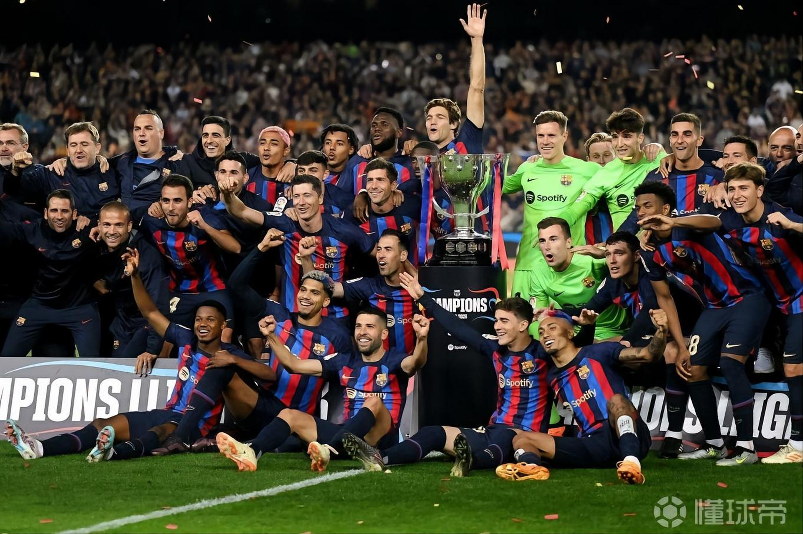
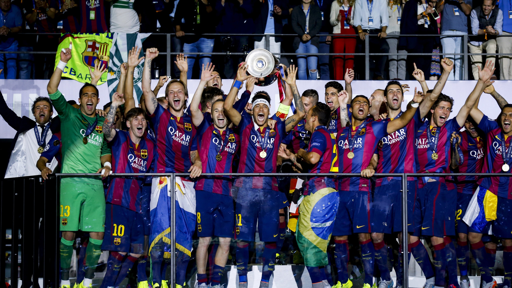

巴塞罗那足球队近三十年各大联赛历史成就
西甲联赛成就
在过去三十年中，巴塞罗那在西甲联赛多次夺冠，展现出强大的统治力。

- 自 1990 年以来，巴萨赢得了 33 个赛季西甲中的 17 座冠军，展现出强大的联赛统治力
- 2009-2010 赛季，巴萨以 99 分的高分夺冠，创造了西甲单赛季积分纪录 。2012-2013 赛季，巴萨又以 100 分的积分再次刷新了这一纪录。
- 赛季第 34 轮，巴萨 6：2 客场横扫皇马，梅西先是助攻亨利打入一球，之后自己梅开二度，这场比赛帮助巴萨在联赛中取得了领衔优势，并最终问鼎联赛冠军.
欧冠联赛成就
欧冠赛场上，巴塞罗那同样有着辉煌的历史表现。

- 在近三十年中，巴萨分别在 1992 年、2006 年、2009 年、2011 年、2015 年夺得欧冠冠军
- 2009 年的 “梦三巴萨”，以哈维、伊涅斯塔、梅西等为核心，凭借让对手近乎绝望的完美传控打法开创盛世，夺得欧冠冠军，并在当年实现了史无前例的单赛季六冠王成就
- 2016/17 赛季欧冠 1/8 决赛次回合，首回合 0 比 4 失利的巴萨，回到主场诺坎普球场，凭借内马尔的最后时刻的梅开二度，并且最终助攻罗伯托绝杀，最终 6-1 屠杀巴黎圣日耳曼，从而以总比分 6-5 惊天翻盘晋级八强.这就是举世闻名的"诺坎普奇迹"
国内杯赛成就（国王杯等）
巴塞罗那在国内杯赛中同样收获颇丰。

- 在过去三十年里，多次捧起国王杯冠军奖杯，与联赛、欧冠赛事形成多线争冠的态势，展现出深厚的阵容底蕴和对不同赛事的应对能力。
- 多次上演经典的杯赛逆转好戏，无论面对弱旅还是强队，都能凭借顽强的斗志和出色的战术调整在杯赛中过关斩将。
- 国王杯赛场上也见证了许多年轻球员的成长，他们通过在杯赛中的出色表现逐渐成为球队的中流砥柱。